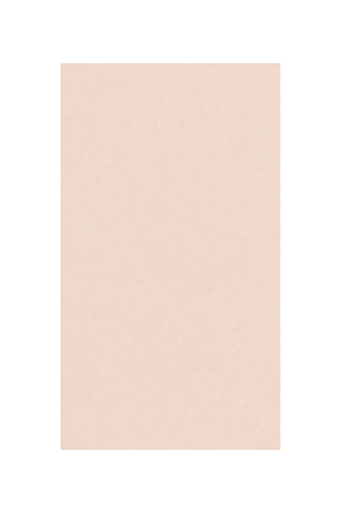
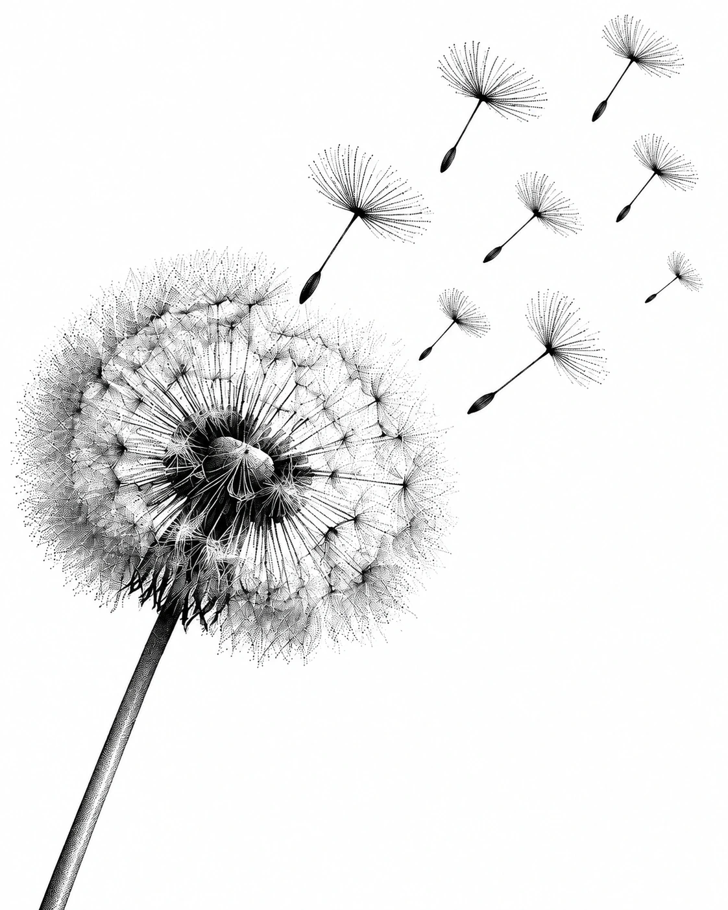

01 / ЮБИЛЕЙ СООБЩЕСТВА
5 ЛЕТ РОССИЙСКОМУ СООБЩЕСТВУ CMA
02 / ПЯТЬ ЛЕТ
ПЯТЬ ЛЕТ МЫ РЯДОМ
Пять лет мы встречаемся, делимся опытом и поддерживаем друг друга.
Вместе создаём место, где можно говорить честно и быть услышанным.
03 / ЧТО ТАКОЕ CMA
ЧТО ТАКОЕ CMA
CMA — сообщество людей, которые помогают друг другу выздоравливать от химсекс-зависимости и наркотиков.
Мы делимся опытом, силой и надеждой — и продолжаем двигаться вперёд вместе.
Нет никаких взносов и сборов.
Главное — желание прекратить употребление.
04 / ПРОГРАММА ДЕЙСТВИЙ
12 ШАГОВ — ЭТО ПУТЬ
Программа 12 шагов помогает нам идти путём выздоровления.
Мы учимся принимать помощь, действовать и передавать свой опыт тем, кто еще страдает от зависимости.
05 / УЗНАТЬ СЕБЯ
ЕСЛИ ТЫ УЗНАЁШЬ СЕБЯ
Ты пытался остановиться —
и снова возвращался.
Употребление стало связано с сексом, одиночеством или попыткой убежать от трудных чувств.
Хочется, чтобы всё было иначе.
Мы узнаём себя в этих чувствах. Наши встречи дают место, где об этом можно говорить открыто.
Тебе не обязательно
разбираться с этим одному.
06 / ЧТО ПОМОГАЕТ
ВЫЗДОРОВЛЕНИЕ — НЕ В ОДИНОЧКУ
- Встречи
- Делимся опытом и слышим друг друга.
- Сообщество
- Учимся быть рядом и просить поддержки.
- Наставник
- Передаём опыт прохождения Шагов.
- 12 шагов
- Применяем программу в повседневной жизни.
07 / ВОЗВРАЩЕНИЕ К ЖИЗНИ
ЖИЗНЬ БЕЗ ЗАВИСИМОСТИ ВОЗМОЖНА
За эти годы мы делились не только трудностями, но и опытом возвращения к обычной жизни.
К простым вещам, которые снова обретают значение.
08 / ПЕРВЫЙ ШАГ
МОЖНО ПРОСТО ПРИЙТИ
За пять лет каждый из нас когда-то пришёл впервые.
- 01Найти встречу.
- 02Прийти и послушать.
- 03Познакомиться с людьми.
- 04Прийти еще на одну встречу.
Не нужно знать всё заранее.
Мы тоже начинали с первого шага.
09 / МЕСТО ДЛЯ ТЕБЯ
СООБЩЕСТВО — ЭТО ВАЖНО
Когда-то мы сами пришли на первую встречу.
Мы приходим разными, но узнаём себя в историях других.
Сегодня встречаем тех, кто только начинает свой путь.
Так живет наше сообщество.
10 / НЕБОЛЬШИЕ ДЕЙСТВИЯ
ДЕНЬ ЗА ДНЁМ
День за днём мы учимся жить по-новому, поддерживать друг друга и расти.
Сегодня достаточно
сегодняшнего дня.
11 / ПРИГЛАШЕНИЕ
ТЕБЕ НЕ НУЖНО СПРАВЛЯТЬСЯ ОДНОМУ
Сегодня ты тоже можешь опереться на наш опыт и поддержку.
Прийти на встречу. Написать. Позвонить.
12 / КОНТАКТЫ
МЫ РЯДОМ
Первым шагом
может быть просто разговор.

